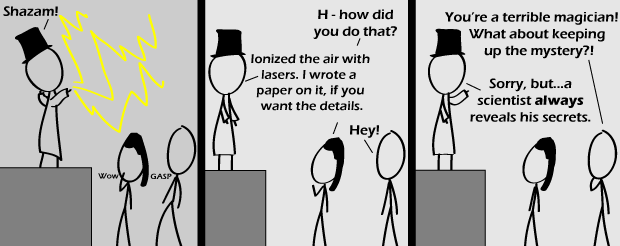

Comic JK 554
When I Feel Like It
⇤
<
?
>
⇥

⇤
<
?
>
⇥
Forum
.
RSS
.
Digg
.
Facebook
.
Reddit
.
Twitter
.
Stumbleupon
How does your mother seduce every dorky college boy she encounters? Magic, of course. Enter your thoughts on number 554 here. Please, no spamming, trolling, or sciencing. awesome IMMA FIRIN MAH PEWPEWLAZORZ!!!!!!!!!!!!!!!!!! >hee hee, that was funny! >IMMA FIRIN MAH CUPCAKE! Science is magic. Must have been sufficiently advanced >+1 Internets for win! magic is science we dont understand >And science is magic we do understand. Therefore, magic is magic we do understand that we don't understand. *insert joke about known unknowns* >>"The problem is not the known unknowns, for which we can find an answer, but the unknown unknowns." >>>Its the things that we dont know that we dont know. >>>>Exactly. >>I'd rather say therefore there is no magic. The Internet is magic. >So are magnets >>Don’t you mean magnets are internetic? Any sophisticated technology is magic in the eyes of primitive societies. Jesus wasn't a messiah, he was a mad scientist who was millennia ahead of his time. > Someone's gonna check whether the bible describes his manic laughter... >> Psalm 2:1-4 >>> All the more reason the bible's right when it says that Jesus will return again (At least I think it says that somewhere...) - he can time travel. >I always thought that he was a very naughty boy? >>*He's* definitely *not* the messiah.